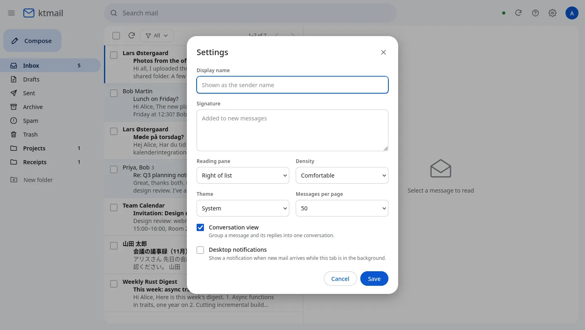
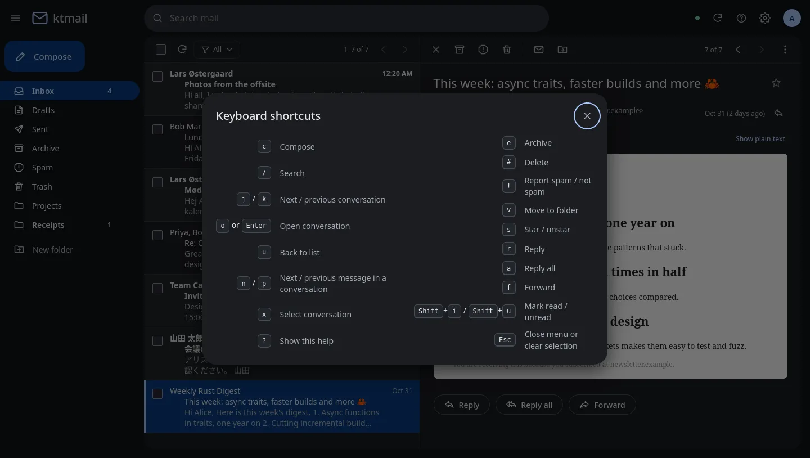
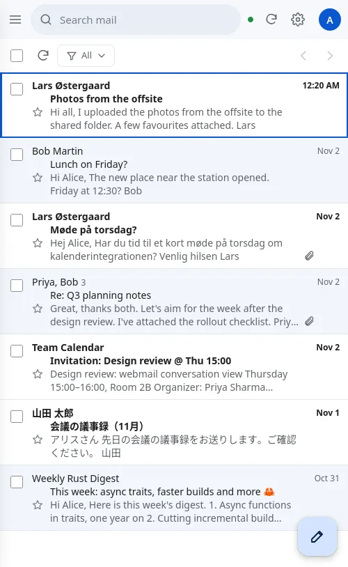
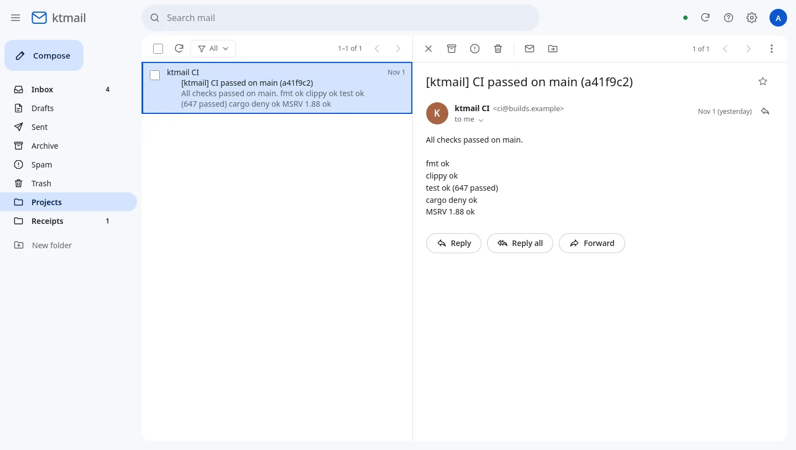

Email · Systems · Rust
ktmail
A complete mail server in one Rust binary, built as a drop-in replacement for Postfix and
Dovecot. It receives, stores, filters and sends mail from one process and one TOML file, and it
takes over an existing server without users noticing. A Gmail-style webmail,
ktmail-web, comes with it.

unsafe_code = "forbid" in every cratekill -9 crashesThe webmail
ktmail-web is a separate binary that talks IMAP and submission to the server like any other
client. It has a Rust (axum) backend and a plain HTML/CSS/JS front end, with no Node and no framework.
These are real captures of the debug build running against a local ktmail, using demo mail at
example.com addresses.




Safe by default
Built for hostile mail
Login credentials live only in process memory. HTML mail is sanitised and shown in a sandboxed frame under a strict Content-Security-Policy, and remote images stay blocked until you allow them. The layout works at phone width, with a floating compose button.

Architecture
One async process on tokio. Every protocol is a listener with its own handler, and the handlers share long-lived services: queue, directory, DNS, store, policy, mail authentication and a session registry. The parsers are written without I/O, so they can be fuzzed and tested on their own.
Inbound: from SMTP to your inbox
- CheckBlock lists, rDNS, rate limits and greylisting, then SPF, DKIM, DMARC and ARC. A pipeline decides whether to reject, tag or score each hit.
- SpoolThe message and envelope are fsynced before the
250reply, with fsyncs shared across transactions. - SieveThe user's script runs at delivery: fileinto, vacation, redirect, reject, editheader and more.
- StoreMessages are written to Maildir, the SQLite index is updated, and IDLE sessions see new mail at once.
- ReadIMAP sessions on the same folder share one in-memory snapshot of the message list.
Outbound: from submission to the world
- SubmitPorts 587 and 465 with SASL. BURL sends a message straight from IMAP Drafts.
- SignDKIM signing with RSA and Ed25519. Forwarded mail gets SRS and an ARC seal.
- QueueRetries with backoff, per-destination rate limits, delay warnings and bounces.
- DeliverMX lookup, with DANE and MTA-STS deciding how strict TLS must be. Results feed TLS-RPT reports.
Protocols and standards
IMAP ENVELOPE and BODYSTRUCTURE responses match Dovecot byte for byte. Interop was checked against swaks, Dovecot imaptest, Pigeonhole, pyspf (203 of 203), dkimpy, rspamd, Pebble and OpenLDAP.
Receiving
- SMTP: PIPELINING, CHUNKING, SMTPUTF8, DSN, REQUIRETLS
- LMTP over TCP or a Unix socket
- HAProxy PROXY v1/v2
Sending
- Submission on 587 and 465, BURL
- DANE, MTA-STS, TLS-RPT
- Per-language DSN bounces
Logging in
- PLAIN, LOGIN, SCRAM-SHA-256-PLUS
- TLS client certificates, OAUTHBEARER and XOAUTH2
- Every Dovecot password hash scheme
Reading
- IMAP4rev1 and rev2: IDLE, MOVE, CONDSTORE/QRESYNC, NOTIFY, METADATA
- POP3 that keeps Dovecot's UIDLs
- Full-text search, including inside attachments
Filtering
- Sieve with 30+ extensions
- ManageSieve on port 4190
- milter v6, rspamd, Postfix policy
Operations
- ACME / Let's Encrypt, hot reload
- Prometheus, Grafana, OpenTelemetry
- .deb, .rpm, container, Helm, musl builds
Migrating from Postfix and Dovecot
The goal is that mail clients notice nothing. UIDVALIDITY and UIDs stay the same, so clients keep their caches. Flags, subscriptions, Sieve scripts and POP3 UIDLs come along, and nothing touches the old data, so you can roll back.
- Import config
migrate postfixandmigrate dovecotwrite onektmail.toml, plus a report on every setting. - Side by sidePostfix keeps the public ports and delivers to ktmail over LMTP, one domain at a time.
- Move mail
migrate maildirtakes over in place, ormigrate imapcopies incrementally. - Verify
migrate verifycompares counts, sizes, UIDs and flags. - Cut overDrain the queue, stop the old daemons, and give ktmail the ports.
$ ktmailctl migrate --help Import Postfix/Dovecot configuration and mail Commands: postfix Convert a Postfix configuration (main.cf, master.cf, maps) dovecot Convert a Dovecot configuration (dovecot.conf, conf.d, .conf.ext) maildir Check an existing Dovecot Maildir for ktmail, or copy it into the account's ktmail location imap Copy an account's mail from another IMAP server into the local store verify Compare an account with its source (counts, sizes, UIDs) $ ktmailctl status ktmail 0.1.0 on mail.localhost, up 2m 21s, ready sessions: 2 queue: active 0, corrupt 0, deferred 0, hold 0, incoming 0 $ ktmailctl index status alice@example.com alice@example.com: 11 messages, 12383B (no quota) INBOX 9 msgs 4 unseen uidvalidity 1793634279 uidnext 10 Projects 1 msgs 0 unseen uidvalidity 1793634286 uidnext 2 Receipts 1 msgs 1 unseen uidvalidity 1793634285 uidnext 2 # filed by Sieve
Filtering with Sieve
Sieve runs at delivery, so filters work no matter which client you use. Existing Pigeonhole scripts work as they are, and Thunderbird or Roundcube can upload new ones over ManageSieve. This rule filed the CI notification into Projects:
require ["fileinto", "mailbox", "imap4flags"]; # CI notifications go to Projects if header :contains "subject" "[ktmail]" { fileinto :create "Projects"; stop; } # Receipts and invoices if address :domain :is "from" "billing.example" { addflag "\\Flagged"; fileinto :create "Receipts"; stop; }

Security and hardening
Memory safety and fuzzing
- All Rust, with
unsafeforbidden in every crate - 25 cargo-fuzz targets covering every parser the network or mail content can reach
- Limits on lines, sizes, connections, MIME depth and Sieve run time
Sandboxed process
- Landlock: writes only to the queue, mail and database directories
- systemd: one capability, a system-call allow-list,
ProtectSystem=strict - Without systemd, it drops root privileges and checks they can't be regained
Logins
- Constant-time checks, and Argon2id with a bounded memory pool
- Per-IP delays and lockout, plus fail2ban-style blocks built in
- SCRAM-PLUS ties the login to the TLS connection
Content and supply chain
- rustls only, no OpenSSL
- Its own zip and XML readers: no XXE, and a zip bomb costs at most 32 MiB
cargo denyon every CI run
Engineering decisions
One process instead of privilege separation
Postfix and Dovecot isolate components in separate processes. ktmail relies instead on memory safety, strict limits and fuzzing, and confines its single process with Landlock and systemd filters. A panic in one session is contained to that task.
Its own MIME parser and its own SPF/DKIM/DMARC/ARC
The existing crates were dropped. An in-house parser that gives byte ranges for every part made it possible to golden-test IMAP output against Dovecot byte for byte. Mail authentication runs on ring with a mockable DNS resolver.
Durable and fast: group commit
Fsyncing before every 250 reply capped intake at 41 msg/s per connection. Sharing directory fsyncs across transactions cut each message's wait from four fsync rounds to two: 12,800 fsync requests were served by 2,432 real fsyncs. A kill -9 torture test lost no accepted mail.
Profiling found the real bottlenecks
Starting one search-indexing task per delivery blocked on the account lock. Using one indexer per account raised intake from 113 to 737 msg/s, 6.5× faster.
One shared mailbox snapshot
IMAP sessions on the same folder now share one immutable message list and keep only their own changes. With 200,000 messages and 10 sessions, that's one 30.6 MiB snapshot instead of about 306 MiB of copies.
Status
Feature-complete (v0.1.0)
Every phase of the plan and every buildable open item is done, and all 647 tests pass. It's dual-licensed Apache-2.0 or MIT and needs Rust 1.88+ on Linux. It has not run in production yet.
Needs a real environment
Tests with real mail clients, delivery to Gmail and Outlook, load tests and a 72-hour soak, long fuzzing runs, a migration rehearsal from a live Postfix and Dovecot server, and an external security review.